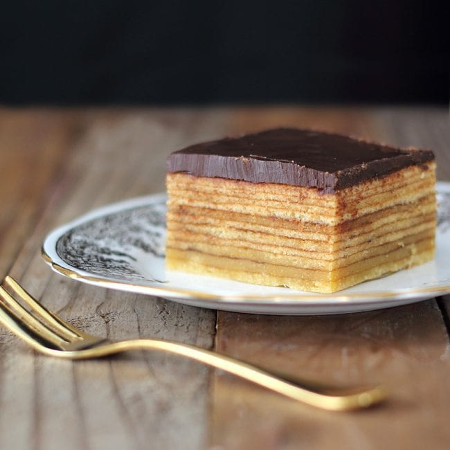

Chocolate Baumkuchen

Photo: Susan, AKA Kiwicook
How to Make Baumkuchen
Try your hand at making our version of German baumkuchen. Popular at Christmas,
it's also known as 'tree cake' because of the rings you'll see when you cut into it.
Ingredients
- 150g salted butter
- 150g golden marzipan
- 200ml double cream
- 115g caster sugar
- 1 tsp vanilla paste
- 6 eggs
- 125g self-raising flour
- 80g cornflour
Chocolate Glaze
- 100g plain chocolate
- 150ml double cream
- 2 tbsp golden syrup
- 20g butter
Steps
-
Heat the grill to medium-high, or set it to 220C if you can.
Butter and line the base of a 23cm springform cake tin.
Put the marzipan and 2 tbsp of the cream into a bowl of a stand mixer and beat for 1-2 mins with a paddle attachment until it forms a paste.
While beating, gradually add the rest of the cream. Tip the mixture into another bowl and set aside.
You don't need to clean the mixer bowl.
-
Put the butter, caster sugar, vanilla and a pinch of salt in the empty mixing bowl and beat for 3-4 mins until pale and fluffy.
Gradually beat in the creamy marzipan mixture.
-
Mix the egg yolks into the cake batter, one by one, then fold in the flour and cornflour.
-
Using an electric whisk, beat the egg whites in a large bowl until it begins to form firm peaks,
then fold it into the cake batter so you don't knock out too much air.
-
Ladle just enough mixture into the cake tin to cover the base - you'll need about two-thirds of a ladle.
Spread the mixture evenly over the base of the tin, then cook under the grill for 3 mins until set and golden,
watching it carefully so it doesn't start to burn.
-
Remove from the grill and ladle the same amount of batter on top.
Spread it out in the same way, making sure that all the cake below is covered in a thin layer.
Cook again for 3 mins. Continue until all the batter is used.
It should make about 10 layers, depending on the thickness.
-
When it's finished cooking, run a small paring knife around the edge of the tin to stop it from sticking,
and leave to cool completely. Remove the cooled cake from the pan and invert onto a cooling rack.
-
To make the glaze, heat the chocolate, cream, syrup and butter together in a saucepan until melted together into a smooth,
glossy sauce, about 1-2 mins. Pour over the top of the cake and down the sides,
then leave to set fir 1 hr before serving.
Home